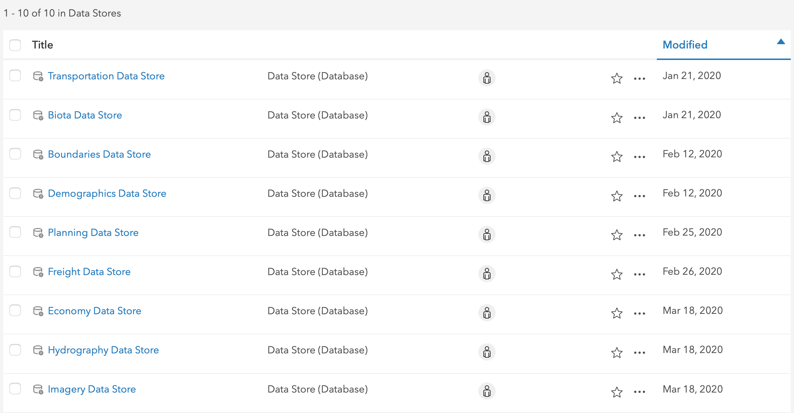
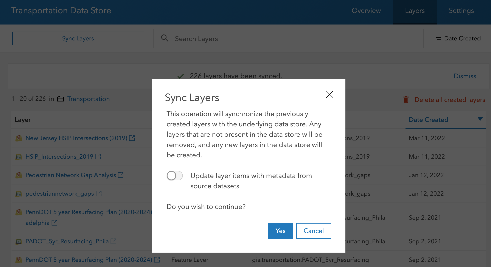
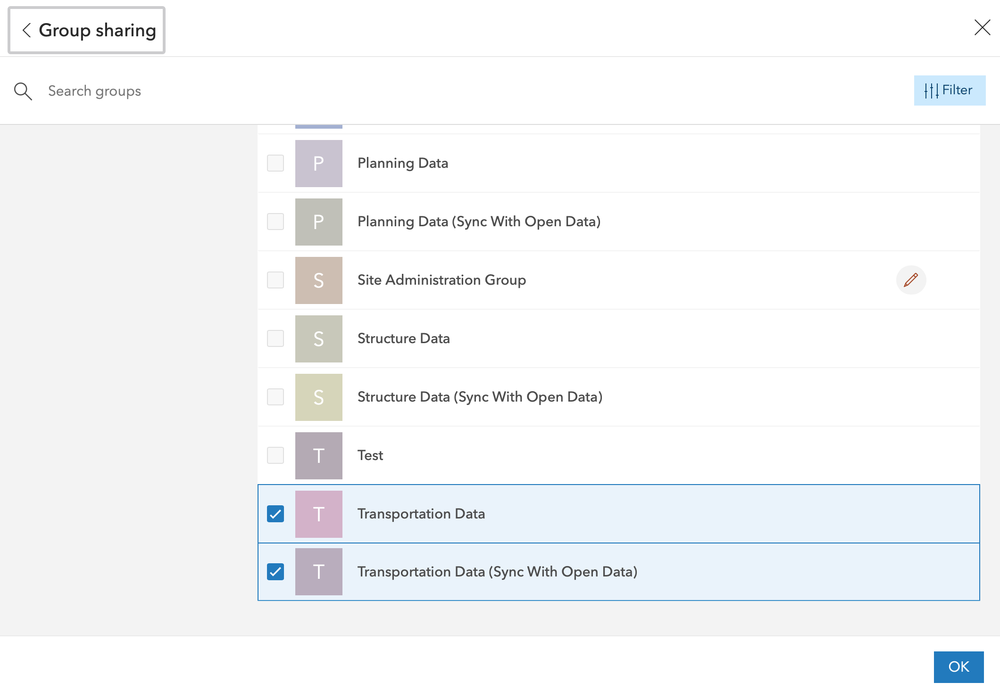

ArcGIS Portal Configuration
DVRPC followed a pretty standard installation and configuration proceedure for our ArcGIS Portal.
ESRI documentation for ArcGIS Portal installation can be found here
User Accounts and Security
Logins are managed through Microsoft Windows Active Directory. DVRPC followed the following documentation for implementation.
Because there is not an active connection for account creation, GIS has developed a script to add/remove staff accounts to the GIS Portal. All staff outside of the GIS department are assigned a Viewer role. Creator roles are only reserved for GIS department staff at this time.
Datastores and Syncing Content from the GIS Database
The DVRPC Portal has been configured with registered datastores for each database schema to help organize data effectively. Any time a new feature is added or deleted to the database, the datastore must be synced with the Portal. The easiest way to do this is to visit the Portal and login then navigate to Content and the Data Store folder. Click the Data Store (schema) for which your feature class was loaded to and in the upper right, click Layers.

You’ll see a list of the layers that are already registered with the Portal. Hit sync and the Portal will add the new feature. After hitting sync you’ll be prompted to with the following window.

Please make sure that the button is toggled in the ‘OFF’ position like shown in the image above. If left in the default ‘ON’ position, any metadata that has been updated in the Portal will be overwritten with whatever metadata is associated with the original feature class.
The feature class will be registered as a Feature Layer and a Map Image Layer in the Portal and stored in the respective category folder.
Once the content is added:
- Set sharing permissions on the feature. Only items that you want to be publicly shared should be shared with 'Everyone'. Otherwise, use 'Organization'.
- Share your feature services only to their respective category group including the groups setup for open data portal syncing

License Server
Our ArcGIS License Server is installed on gis-portal. We use a provision file to assign specific licenses to groups/individuals.